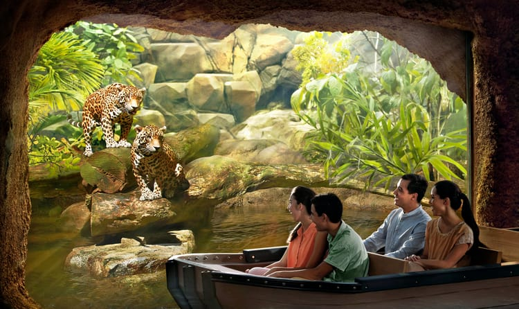

 The River Safari is a river-themed zoo and aquarium located in Singapore. It is built over 12 hectares (30 acres) and nestled between its two counterparts, the Singapore Zoo and the Night Safari, Singapore. It is the first of its kind in Asia and features freshwater exhibits and a river boat ride as its main highlights. The safari was built at a cost of S$160m, with an expected visitor rate of 820,000 people yearly. The park consists of a total of 10 different ecosystems around the world, including the River Nile, Yangtze River, Mississippi, Amazon as well as the Tundra. It features 5000 animals of 300 species,including numerous that are endangered. Among these are anacondas, electric eels, Mekong freshwater stingrays, West Indian manatees, Mekong giant catfish, giant pandas, gharials, red pandas, golden pheasants, paddlefish, jaguars, squirrel monkeys, giant salamanders, giant otters and Chinese alligators that are part of an exchange program with the Asahiyama Zoo in Hokkaido, Japan.
Singapore Page